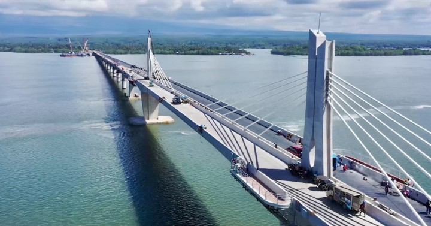
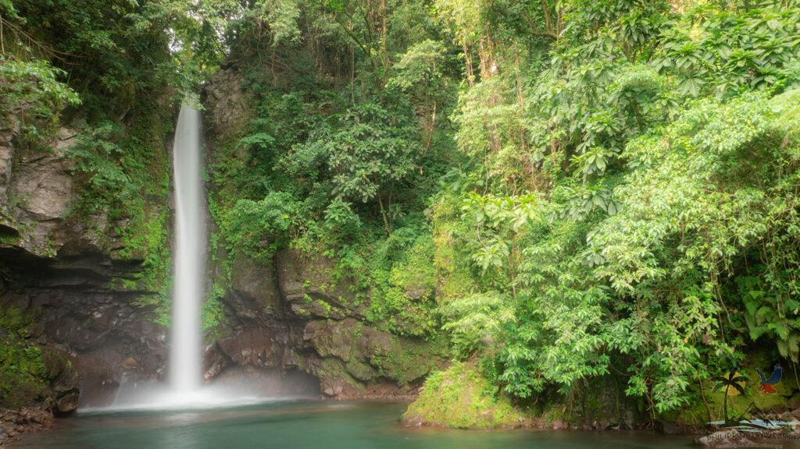

Panguil Bay Bridge
The Panguil Bay Bridge is a major infrastructure project connecting Tangub City in Misamis Occidental and Tubod in Lanao del Norte, designed to greatly shorten travel time across Panguil Bay. Once completed, it will become one of the longest sea-crossing bridges in the Philippines, improving transportation, trade, and regional development in Northern Mindanao.
Location: Tangub, Misamis Occidental - Tubod, Lanao Del Norte
Katibawasan Falls
A scenic plunge waterfall surrounded by lush forest, Katibawasan is an easy and rewarding visit with a cool pool at its base — ideal for quick dips and nature photos.
Location: Mambajao, Camiguin
Sunken Cemetery

The Sunken Cemetery marks an area submerged by volcanic activity centuries ago. Visitors often snorkel or view the crosses from a banca while enjoying calm sea views.
Location: Catarman/Mambajao, Camiguin
Dahilayan Adventure Park

Located in Bukidnon’s highlands, Dahilayan is famous for one of the longest ziplines in the Philippines and scenic pine-covered slopes — a top pick for thrill-seekers.
Location: Manolo Fortich, Bukidnon
Tinago Falls

Tucked in a gorge near Iligan City, Tinago Falls is reached via a stair descent and rewards visitors with a powerful, emerald pool and dramatic rock walls.
Location: Iligan City, Lanao del Norte
Mapawa Nature Park

Mapawa offers waterfalls, river tubing, and easy trails just outside Cagayan de Oro — great for families and groups seeking outdoor fun near the city.
Location: Cagayan de Oro, Misamis Oriental